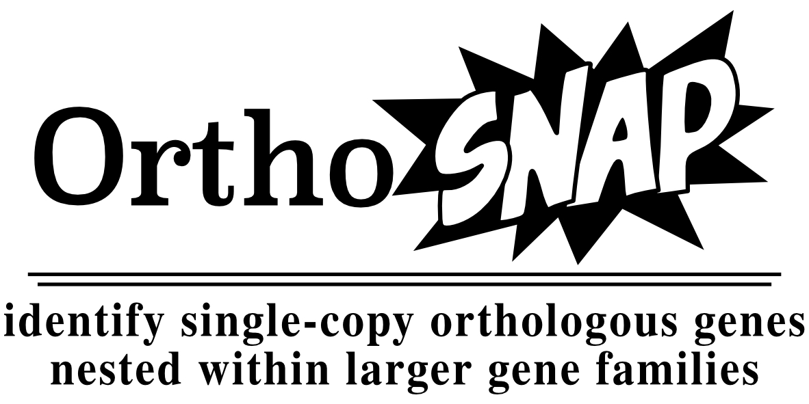

ClipKIT
 Since the early 1990's, there has been one predominant guiding light for multiple sequence alignment trimming - the removal of phylogenetically uncertain sites defined as those that are highly divergent; however, the efficacy of this approach has been called into question. ClipKIT implements an alternative strategy wherein sites with phylogenetic certainty are retained and others are removed. Our benchmarking analyses show that ClipKIT is a reliable and top performing software.
Publication PDF; Documentation; Source code
Since the early 1990's, there has been one predominant guiding light for multiple sequence alignment trimming - the removal of phylogenetically uncertain sites defined as those that are highly divergent; however, the efficacy of this approach has been called into question. ClipKIT implements an alternative strategy wherein sites with phylogenetic certainty are retained and others are removed. Our benchmarking analyses show that ClipKIT is a reliable and top performing software.
Publication PDF; Documentation; Source code
PhyKIT
Diverse disciplines in biology process and analyze multiple sequence alignments (MSAs) and phylogenetic trees to evaluate their information content, infer evolutionary events and processes, and predict gene function. However, automated processing of MSAs and trees remains a challenge due to the lack of a unified toolkit. To fill this gap, we introduce PhyKIT, a toolkit for the UNIX shell environment with 35 (and counting) functions that process MSAs and trees.
Publication PDF; Documentation; Source code
BioKIT
 Bioinformatic workflows often rely on individual software to conduct single analyses, which makes maintaining workflows cumbersome and threatens reproducibility. To address this obstacle, we introduce BioKIT, a versatile toolkit for the UNIX shell environment with 40 functions that conduct processing and analysis such as genome assembly quality assessment, alignment summary statistics, relative synonymous codon usage, codon optimization estimation, and more.
Publication PDF; Documentation; Source code
Bioinformatic workflows often rely on individual software to conduct single analyses, which makes maintaining workflows cumbersome and threatens reproducibility. To address this obstacle, we introduce BioKIT, a versatile toolkit for the UNIX shell environment with 40 functions that conduct processing and analysis such as genome assembly quality assessment, alignment summary statistics, relative synonymous codon usage, codon optimization estimation, and more.
Publication PDF; Documentation; Source code
orthoSNAP
Molecular evolution studies such as phylogenomics and surveys of positive selection often strictly rely on single-copy orthologous genes (SC-OGs). To increase the number of molecular markers for use in molecular evolution studies, orthosnap identifies subgroups of SC-OGs nested within larger gene families using a phylogenetically informed framework. The resulting SC-OGs are termed SNAP-OGs because they have undergone a splitting and pruning procedure.
Publication PDF; Documentation; Source code
orthofisher
 orthofisher conducts automated HMMsearches among a set of proteomes using a predetermined set of orthologs. Sequence similarity searches classify results as multi-copy, single-copy, or absent in a given genome. For the purposes of phylogenomics/phylogenetics, multi-fasta files are generated for all sequences as well as those that are single-copy; for gene family copy number determination, easily parsed output files contain absolute copy number of hits from the sequence similarity search.
Publication PDF; Documentation; Source code
orthofisher conducts automated HMMsearches among a set of proteomes using a predetermined set of orthologs. Sequence similarity searches classify results as multi-copy, single-copy, or absent in a given genome. For the purposes of phylogenomics/phylogenetics, multi-fasta files are generated for all sequences as well as those that are single-copy; for gene family copy number determination, easily parsed output files contain absolute copy number of hits from the sequence similarity search.
Publication PDF; Documentation; Source code
treehouse
Sometimes phylogenies are so large it is challenging to determine the relationships among a subset of taxa. To remedy this issue, treehouse, a user friendly GUI app, allows users to obtain subtrees from larger phylogenies. To obtain subtrees, upload a list of tip names in the desired subtree from an inputted phylogeny or a phylogeny from the treehouse database. Thereafter, users can download a pdf or newick file of the subtree of interest.
Publication PDF; Documentation & Source code
ggpubfigs
 Creating publication ready figures can increases figure accessibility and improve science communication. Here, I present ggpubfigs, an R package with customized themes and colorblind friendly color palettes to help create publication (or presentation) ready figures. Please contact me if you would like to contribute a theme or color palette!
Zenodo record; Documentation & Source code
Creating publication ready figures can increases figure accessibility and improve science communication. Here, I present ggpubfigs, an R package with customized themes and colorblind friendly color palettes to help create publication (or presentation) ready figures. Please contact me if you would like to contribute a theme or color palette!
Zenodo record; Documentation & Source code
Top of page